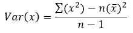

You get marks for calculating Sxx, Sxy, Syy and showing the method, when calculating r = Sxy / root( SxxSyy ).
Sxx = Σx² - (Σx)² / n
Sxy = Σxy - (ΣxΣy) / n
Syy = Σy² - (Σy)² / n
If the percentage chance is lower than the significance level, it's significant.
If the z/Χ²/ρ/rs value is greater than the critical value, it's significant.
If the percentage chance is greater than the significance level, it's insignificant.
If the z/Χ²/ρ/rs value is lower than the critical value, it's insignificant.
There is a mark for stating outright whether or not the data fits someone else's analysis.
State what Χ² contributions and fes actually imply.
Extrapolated data that is near the sample data is somewhat reliable.
Comment on how far away new data is from the regression line.
Φ paramters always to 3 d.p..
The wider normal curve is always less tall.
The wider normal curve is always less tall.
If they change x and y to different letters, use their letters.
Talk about Poisson conditions in context.
"Alternative hypothesis should be made without referring to sample data."
"2-tail if no suggestion of correlation being positive or negative."
ΣΧ² accuracy is to 4 s.f..
Significance level: the probability that you reject H0 when it was in fact true.
Making the significance level smaller means: less likely to reject H0 when it's true, but more likely to accept H0 when it's false.
Making the significance level higher means: more likely to reject H0 when it's true, but less likely to reject H1 when it's true.
Spearman's Rank Correlation Coefficient, rs = 1 - 6Σd² / n(n² - 1).
d² = (difference between the two ranks)², when doing Spearman.
Including an outlier in the scattergraph will make it less eliptical.
Binomial to Poisson when: N large, p small
Binomial to Normal when: N large, p≈0.5
Poisson to Normal when: λ large (>10)
Variance of x: 
Eliptical scattergraph shows that the population is bivariate normal.
Conditions for Poisson:
- s
ingly - c
ontinuous mean rate - i
ndependently - r
andom rate constantly (rate doesn't change)
p(z > -1.645)= Φ(1.645)
p(z < -1.645)= -Φ(1.645)
p(z > 1.645)= -Φ(1.645)
Mean and variance to 4d.p. when doing Binomial->Normal.
When extrapolating, say that the model might break down for large/small values because there are other factors at those values or because the model is different i.e. a curve.
State how pmcc is changed (+/-) based on the position of the added point.